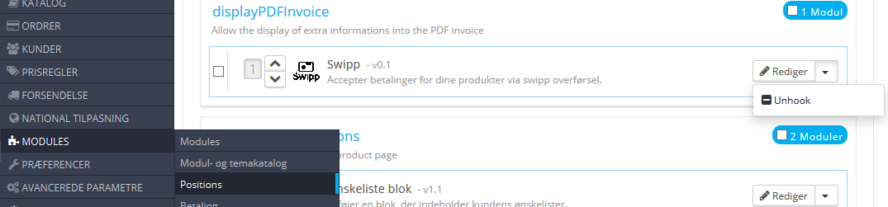
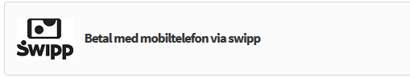

<!DOCTYPE html>
<html>
    <head>
        <meta charset='utf-8'>
        <meta http-equiv="X-UA-Compatible" content="chrome=1">
        <meta name="description" content="Swipp Modul til Prestashop 1.4, 1.5 og 1.6 : Accepter betalinger med swipp">
        <link rel="stylesheet" type="text/css" media="screen" href="stylesheets/stylesheet.css">
        <title>Swipp Modul til Prestashop 1.4, 1.5 og 1.6</title>
        <script type="text/javascript">
            function faqOpen(index) {
                document.getElementById('faqtxt_' + index).style.display = "block";
            }
            function faqClose(index) {
                document.getElementById('faqtxt_' + index).style.display = "none";
            }
        </script>
    </head>
    <body>
        <!-- HEADER -->
        <div id="header_wrap" class="outer">
            <header class="inner">
                <a id="forkme_banner" href="https://github.com/cmjnisse/swipp-prestashop">View on GitHub</a>
                <h1 id="project_title">Swipp til Prestashop 1.4, 1.5 og 1.6</h1>
                <h2 id="project_tagline">Accepter betalinger med swipp</h2>
                <section id="downloads">
                    <a class="zip_download_link" href="https://github.com/cmjnisse/swipp-prestashop/releases/download/0.1.5/swipp.zip">Download this project as a .zip file</a>
                </section>
            </header>
        </div>
        <!-- MAIN CONTENT -->
        <div id="main_content_wrap" class="outer">
            <section id="main_content" class="inner">
                <h3><a name="velkommen-til-swipp-for-prestashop" class="anchor" href="#velkommen-til-swipp-for-prestashop" title="Swipp Modul til Prestashop 1.4, 1.5 og 1.6"><span class="octicon octicon-link"></span></a>Swipp Modul til Prestashop</h3>
                <p>
                    Hvad er <a href="http://swipp.dk/" title="">Swipp</a>, Swipp er en nem måde at sende penge på fra sin mobil telefon til andre som også er registret med Swipp<br />
                    Som erhvervsdrivende med butik kan du også tage imod betalinger med Swipp, 
                    dog skal du som erhvervsdrivende henvende dig til din bank omkring at blive oprettet i systemet 
                    til at modtage betalinger med Swipp overførelse<br />
                    alt omkring swipp og den måde det fungere på kan findes på deres hjemmeside <a href="http://swipp.dk/" title="">www.swipp.dk</a><br />
                </p>
                <blockquote cite="https://portal.swipp.dk/wps/bankdata/jsp/html/da/PortalFrame.jsp">
                    Du kan overføre op til 10.000 kr. (eller selv bestemme et lavere dagligt maksimum). Som modtager af Swipp-overførsler er der ingen begrænsning på, hvor mange penge du kan modtage.<br /><br />
                    Hvem kan swippe til mig?, Kunder i deltagende pengeinstitutter, der har tilmeldt sig via pengeinstituttets Swipp-løsning.
                </blockquote>

                <h3>Installere Modulet</h3>
                <p>
                    For at installere modulet så simpelt som muligt skal du downloade den fil der heder "<i>swipp.zip</i>", 
                    eller bare klikke på .zip mappen oppe til højre her på siden
                </p>
                <p>
                    Er du derimod en af dem der vil lave alt selv, ændre i koden ogsv.. kan du lave en <a href="https://github.com/cmjnisse/swipp-prestashop/pulls">Pull Requests</a>, klone det via Git, uanset hvordan du gør er du velkommen til at gøre det
                </p>

                <h3>Hjælp, Problemer med modulet og så videre</h3>
                <p>
                    skulle det ske at du har problemer med modulet eller gerne vil have noget tilføjet/integreret
                    som jeg måske ikke lige har tænkt over, har du mulighed til at raportere dette ved hjælp af
                    <a href="https://github.com/cmjnisse/swipp-prestashop/issues">Github issues</a> tracking system, 
                    i tilfælde at du ikke gider oprette en ny bruger konto kan du naturlig vis også skrive en mail 
                    til "swipp-presta [AT] cmjscripter.net" dog skal det nævnes at der kun kan modtages medelser 
                    som er sendt som tekst (IKKE NOGET HTML), skulle du have brug for at skrive lægere detaljeret
                    forklaringer som bedst gør sig som en "formateret mail" er der en mailadresse i toppen af 
                    alle filerne som tilhøre dette modul den kan du da skrive til
                </p>

                <h3>FAQ</h3>
                <a href="javascript:faqOpen('1');">Hvorfor er der tilføjet en note om betaling på faktura?</a>
                <div id="faqtxt_1" class="faqtxt">
                    <p>
                        <a href="javascript:faqClose('1');">Luk</a><br /><br />
                        Der er tilføjet en note om betaling med swipp på fakutren da der i modulet er mulighed 
                        for at bruge flere valutatere vis din shop her mere end en valuta aktiv
                        og dermed give en note om at kun betaling med danske kroner er accepteret.<br /><br />
                        <strong>hvordan fjerner jeg den?</strong><br />
                        det er faktisk simpelt i prestashop har du muligheden for at fjerne moduler fra deres
                        aktive kroge.<br />
                        <strong>1.</strong>: inde i administrationen under moduler er der et menu punkt kaldet positioner<br />
                        <strong>2.</strong>: herinde kan du så fjerne alle de moduler som du vil fra de kroge/steder i din shop hvor du ikke vil have disse til at være<br />
                        <strong>3.</strong>: i toppen af siden skal du klikke på afkrydsningsfeltet <i>" Vis hooks uden position "</i><br />
                        <strong>4.</strong>: her efter når siden er blevet genindlæst, lokaliser da overskriften <i>" displayPDFInvoice "</i><br />
                        <strong>5.</strong>: under denne overskriften kan du finde modulet Swipp og til højre for denne kan du vælge <i>" Unhook "</i><br />
                        <strong>6.</strong>: Det var det nu skulle modulet være fjernet fra all fakture der bliver genereret<br />
                        
                    </p>
                </div>
                <hr />
                <a href="javascript:faqOpen('2');">Hvorfor er der ordre total på betal med Swipp?</a>
                <div id="faqtxt_2" class="faqtxt">
                    <a href="javascript:faqClose('2');">Luk</a>
                    <p>
                        Der er tilføjet en parentes med ordre total på Swipp fordi der kan bruges flere valutare
                        internt i shoppen men da Swipp kun er til danske banke vil der i langt de fleste tilfælde 
                        kun acceptere Danske Kroner, som så demonstreres på den måde<br />
                        <br />
                        <strong>hvordan fjerner jeg den?</strong><br />
                        du kan fjerne den ved at til rette filen<br />
                    </p>
                    <pre>"modules/swipp/views/templates/hook/payment_[1.6].tpl"</pre><br />
                    <p>
                        og ændre linjen
                    </p>
                    <pre>"{l s='Pay by mobilphone through swipp' mod='swipp'} &lt;i>(&lt;b>{$DKK_CurrencyName} {displayPrice price=$DKK_Total currency=$DKK_CurrencyId}&lt;/b>)&lt;/i>&lt;/a>&lt;/p>&lt;/div>&lt;/div>"</pre><br />
                    <p>
                        Til
                    </p>
                    <pre>"{l s='Pay by mobilphone through swipp' mod='swipp'} &lt;/a>&lt;/p>&lt;/div>&lt;/div>"</pre><br />
                    <p>
                        
                    </p>
                </div>
                <hr />
                <a href="javascript:faqOpen('3');">Hvorfor er der så mange stavefejl?</a>
                <div id="faqtxt_3" class="faqtxt">
                    <a href="javascript:faqClose('3');">Luk</a>
                    <p>
                        va ska ar sig, jeg skrper ikke så god..!<br />
                        ej, jeg bruger ikke tid på stavningen når jeg koder det er op til den 
                        eller de personer der bruger det at rette stavningen ligesom du gjorde da
                        du satte din webshop op for første gang.!
                    </p>
                </div>

                <h3>Licens</h3>
                <p>
                    <a href="http://www.gnu.org/copyleft/gpl.html">GNU General Public License version 3</a>
                </p>
                <pre>This program is free software: you can redistribute it and/or modify
it under the terms of the GNU General Public License as published by
the Free Software Foundation, either version 3 of the License, or
(at your option) any later version.

This program is distributed in the hope that it will be useful,
but WITHOUT ANY WARRANTY; without even the implied warranty of
MERCHANTABILITY or FITNESS FOR A PARTICULAR PURPOSE. See the
GNU General Public License for more details.

You should have received a copy of the GNU General Public License
along with this program. If not, see <http://www.gnu.org/licenses/>.</pre>
            </section>
        </div>

        <!-- FOOTER  -->
        <div id="footer_wrap" class="outer">
            <footer class="inner">
                <p class="copyright">Swipp for prestashop maintained by <a href="https://github.com/cmjnisse">cmjnisse</a></p>
                <p>Published with <a href="http://pages.github.com">GitHub Pages</a></p>
                <p>Download Seneste <a href="https://github.com/cmjnisse/swipp-prestashop/releases/download/0.1.5/swipp.zip">swipp.zip (v0.1.5)</a></p>
            </footer>
        </div>


    </body>
</html>
